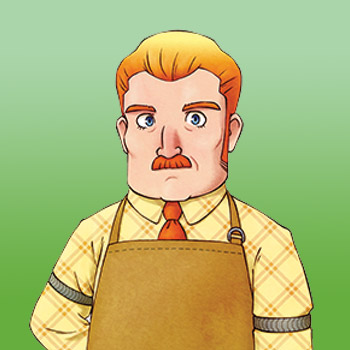

Dudley es el gerente de la posada local y se ocupa del área del restaurante que esta en la planta baja, mientras que su hija Ran se ocupa de la limpiesa de las habitaciones de huéspedes de la planta superior. Su esposa falleció hace mucho tiempo, dejando a Dudley a cargo de criar a Ran como padre soltero. Dudley regresa a la cima de la Colina Madrepasa cada 5 de otoño para recordar a su querida y amada esposa fellesida.
Él está buscando a la persona indicada, un hombre que se encantador para dejerla a cargo a Ran y que la haga feliz por el resto de su vida. La intromisión de Dudley en la vida de Ran ha causado cierta vergüenza a Ran, aunque ella entiende que él sólo está tratando de ayudarla por lo que ella nunca se enoja con el.
El nombre de Dudley era Doug en el juego original Harvest Moon: Friends of Mineral Town del juego de GBA .
| Cumpleaños |
11 de invierno. |
|---|
| Horario |
- El horario semanal de Dudley lo mantiene en la posada todo el día. Comenzará su día en la trastienda cerrada con llave y luego estará en el mostrador desde las 8:00 am hasta la 1:00 pm.
- Se quedará en el cuarto de atrás hasta las 3:00 pm, luego en el frente hasta las 7:00 pm, luego en el cuarto de atrás hasta las 9:00 pm, y luego nuevamente en el frente hasta que la posada cierre a las 10:00 pm.
|
|---|
Preferencias de regalo (F)
La mejor forma de mejorar la amistad con este aldeano es siempre regalar las cosas que le gusta una vez por dia.
, curry en polvo, Hierba verde, hierba azul marino, , , onigiri , , Concentrado de uva premium, Stamina Booster, Stamina Booster XL, tomate, blanco Hierba,
Ajillo, Aqua Pazza, Bagna Cauda, Carpaccio, Dorayaki, Buñuelos de Pescado, Sopa de Pescado, Ketchup, Napolitana,Orangette, Paella, , Tazón de Arroz con Mariscos, Tempura Soba, Pizza Vegetal
|
- Queso (C/T)
*
- Huevo (C/T)
*
- Leche (C/T) (C/A)
*
- Manzana UMSE
*
- Manzana
*
- Manzana HMMR
*
- Manzana SMDF
*
- Chocolate
*
- Mayonesa (C/T)
*
- Mantequilla
*
- Quiche
*
- Torta de fresa
*
- Pepino
*
- Judía azuki
*
- Naranja
*
- Aceite
*
- Miel
*
- Piña
*
- Repollo
- Pan
*
- cafeína
*
- súper cafeína
*
- Pastel de naranja
*
- zanahoria
*
- Uva Silvestre
*
- Cebolla
*
- Harina de Trigo
*
- Harina de dango
*
- Manzana asada
*
- Cáscara confitada
*
- Pescado mediano
*
- Miel
*
- Zumo de piña
*
- Huevos benedictos
*
- Pescado grande*
- Agua de uvas silvestres
*
|
|
- Amatista
- Aguamarina
- Esmeralda
- Granate
- Rubí
- Zafiro
- Huevo fritos
- Tempura
- Ensalada
- Sándwich
- Tortilla de arroz
- Nasi goreng
- Bibimbap
- Sashimi
- Palomitas
- Okonomiyaki
- Patatas fritas
- Fondue de queso
- Risotto de queso
- Topacio
|
|
- Lata vacía
- Hojas de Elly
- Rama
- Rama
- Todos los minerales
- Lanas (C/T) (C/A)
- Hilos (C/T)
- Bota de goma
- Espinas de pescado
- Forraje
- Hongo Venenoso
- Turquesa
- Piedra de luna
- Ágata
- Adamantita
- Chute de resistencia XL
- Hierba
- Fósil Antiguo
- Todas las hiervas silvestres
- Hierba negra
- Tesoro Pirata
- Alimento para pollos
- Carta en botella
- Piedra Tomatosetta
- Hierba blanca
- Flor mágica roja
- Flor mágica azul
- Hongo
- Jade
- Fluorita
- Sopa de pescado
- Golosina para mascotas
- Madera
- Piedra
- Curry en polvo
- Brotes de Bambú
- Cafeína
- Madera Dorada
- Chute de resistencia
- Súper Cafeína
- Pescado grande
- Rosa del desierto
- Alejandrita
- Flor de Gato Rosa
- Flor de juguete
|